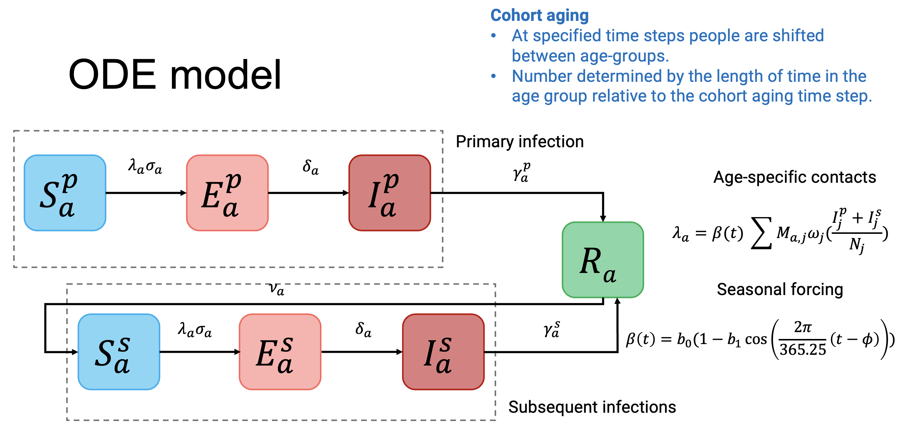

A deterministic, ODE model of Respiratory Syncytial Virus (RSV) transmission. This package is under constant development, so will change without notice. The current model outputs are yet to be fully tested.
Installation
You can install the development version of RSVsim from GitHub with:
# install.packages("pak")
pak::pak("IsaacStopard/RSVsim")Model structure
The model is an adapted version of an susceptible-exposed-infectious-recovered-susceptible (SEIRS) deterministic, ordinary differential equation (ODE) model outlined in:
Hogan, A. B., Campbell, P. T., Blyth, C. C., Lim, F. J., Fathima, P., Davis, S., … & Glass, K. (2017). Potential impact of a maternal vaccine for RSV: a mathematical modelling study. Vaccine, 35(45), 6172-6179, https://doi.org/10.1016/j.vaccine.2017.09.043,
Nazareno, A. L., Newall, A. T., Muscatello, D. J., Hogan, A. B., & Wood, J. G. (2024). Modelling the epidemiological impact of maternal respiratory syncytial virus (RSV) vaccination in Australia. Vaccine, 42(26), 126418, https://doi.org/10.1016/j.vaccine.2024.126418.
In brief, the model is age-structured and primary (the first, ) and secondary infections (any subsequent infection, ) are specifically tracked. The force of infection is determined by a seasonal forcing function () and the age-specific contact matrix (the mean contacts per person, ). The population is stratified into susceptible (), exposed (), infectious () and recovered states ().
